C1
딸깍 LIME SODA · 3D 캔
“캔이 잼 병처럼 읽힌다”
1차넥이 두꺼운 원통 칼라, 바닥은 흰색, 뚜껑은 깊은 컵 — 캔이 아니라 잼 병으로 보였다.
사람실물 단면 치수를 직접 지정: 직벽 r33, 넥 r33→27, 림 r27.5, 뚜껑 6mm 오목.
결과3차 검수에서 통과.
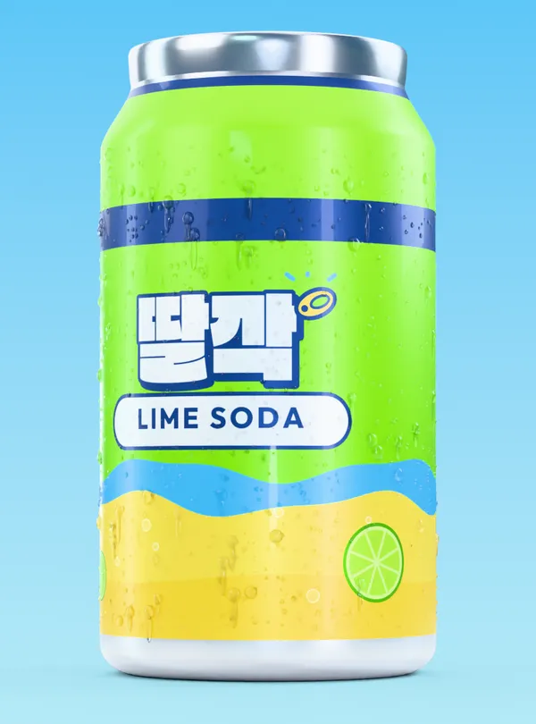
3차 통과Generative AI Content Creator — Portfolio
ComfyUI·MiniMax-H3로 영상을 생성하고, Blender로 제품과 엔드카드를 직접 만들고, ACE-Step 음악과 편집·합성까지 묶어 광고 한 편을 끝냅니다. 모델이 틀린 곳은 사람이 프레임 단위로 잡습니다.
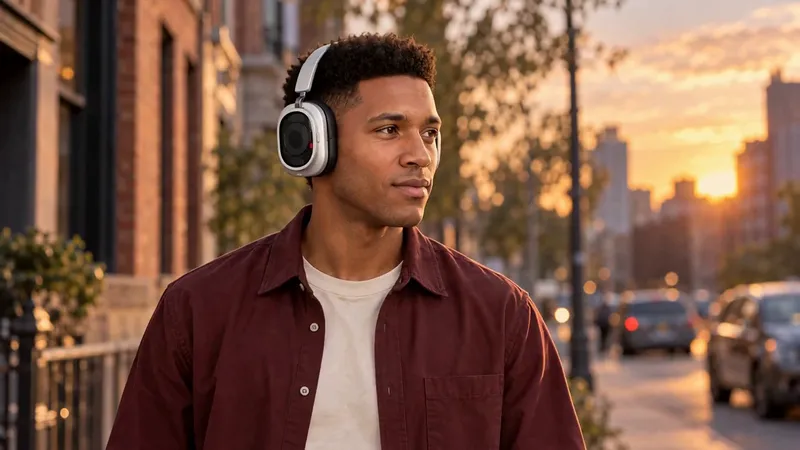
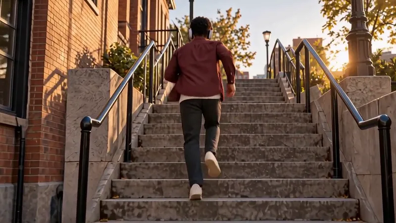
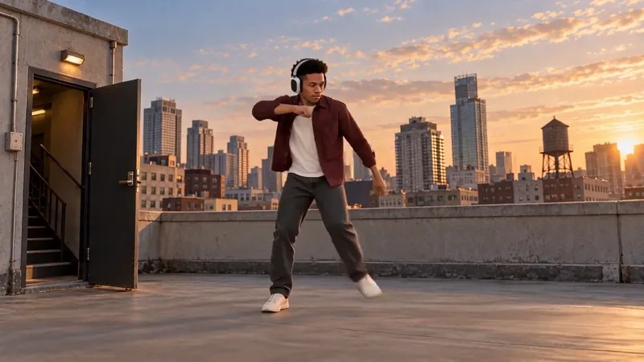
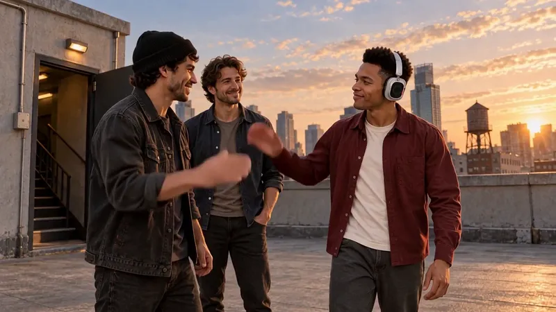
AI 생성 장면생성 → 검수 → 합성 흐름검수 탈락 → 다시 생성
Work 01 · AI 영상 광고 시안
헤드폰을 쓴 한 사람의 하루를 20초로 담은 AI 영상 광고 시안이에요. 거리·계단·옥상, 레코드점·인쇄소·세탁소·기차·농구장까지 장소와 이야기를 바꿔 가며 7편을 만들었고, 이 과정에서 얻은 결론으로 모션그래픽 본편을 다시 만들었어요.
v7 20초 · 1280×720 · 소리 있음 — AI 생성 영상, 끝부분의 공식 제품 사진은 직접 만든 3D 엔드카드로 교체
Process evidence
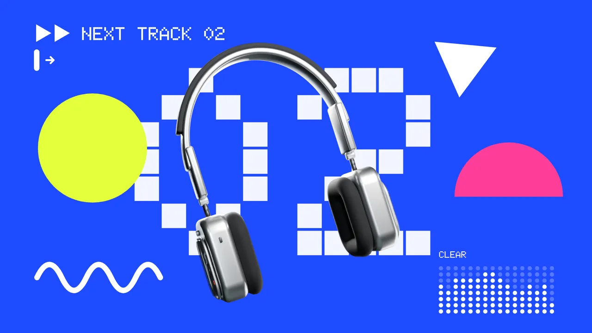
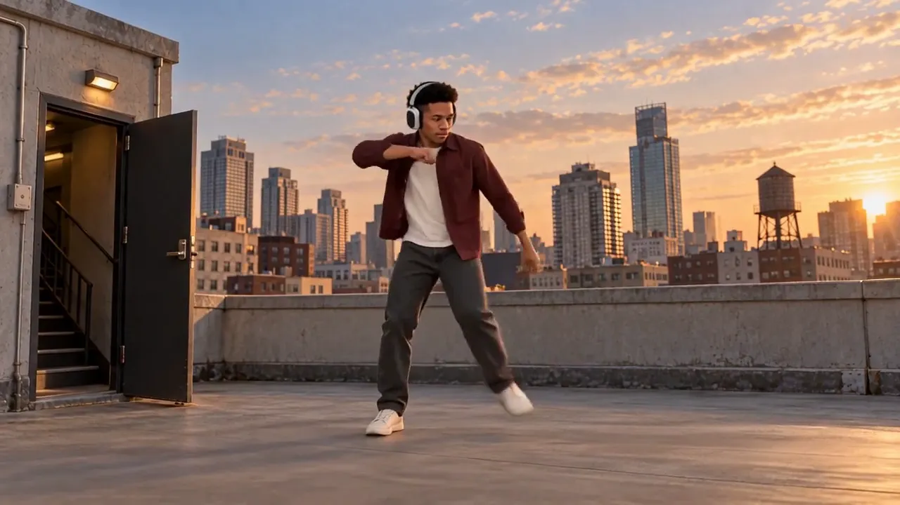
REJECT · AI 실사 v7ADOPT · 3D 모션그래픽v7: 9초 배경 확장, 뜬금없는 춤·친구, 인물의 AI 질감. 실사 시안 7편 모두 "느리고, 장소만 바뀌고, 제품과 변화의 인과가 없다"는 판정.
사람 대신 제품의 실제 조작(누르기·길게·돌리기·패들)이 장면을 바꾸는 3D 모션그래픽 본편. 제품은 Blender로 직접 모델링.
제작 기간
4일
10.09 v6 착수 → 10.12 v7 납품. 사이에 v6 검토 PDF 7쪽을 반영.
본편
480프레임
20초 · 1280×720 · 24fps · 9컷
v7 새 생성
7,258초
새 생성 테이크 5개의 실제 실행 시간 합. 테이크당 1344×768 · 124프레임 · 32스텝.
비용
LOCAL
영상(MiniMax-H3)·음악(ACE-Step) 모두 로컬 GPU 모델. 기록상 외부 유료 생성·유료 API 사용 없음.
최종 검수
69프레임
독립 검수 69프레임 · 연속 시트 7장 · 1배속 재생 480프레임 끊김 0.
통과 못 한 항목
3개
제품 조작부 · 춤 소매 · 하이파이브 반동. 숨기지 않고 기록했고, v7은 거절됐습니다.
Human in the loop
C1
딸깍 LIME SODA · 3D 캔

3차 통과C2
딸깍 LIME SODA · S4 라임 / S5 따르기
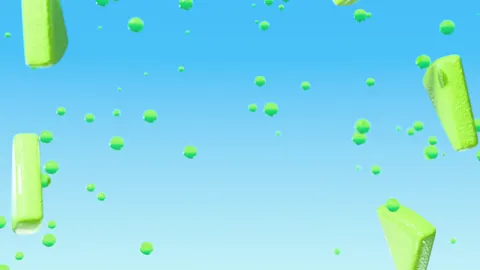
전 · 스펀지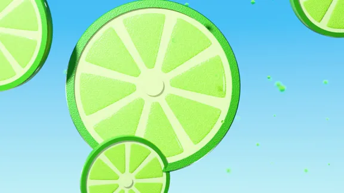
후 · 슬라이스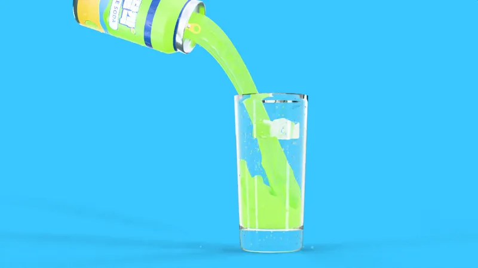
전 · 슬라임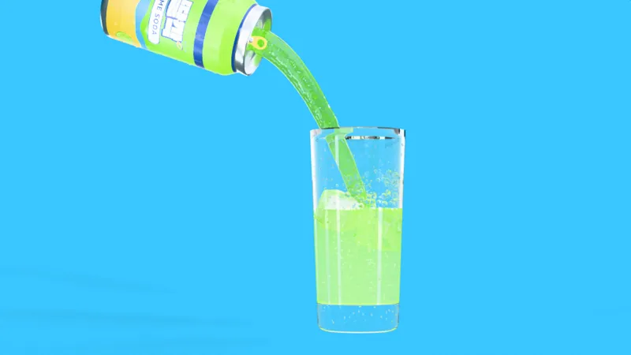
후 · 3회차C3
Nothing Headphone (1) Pro · 실사 → 3D
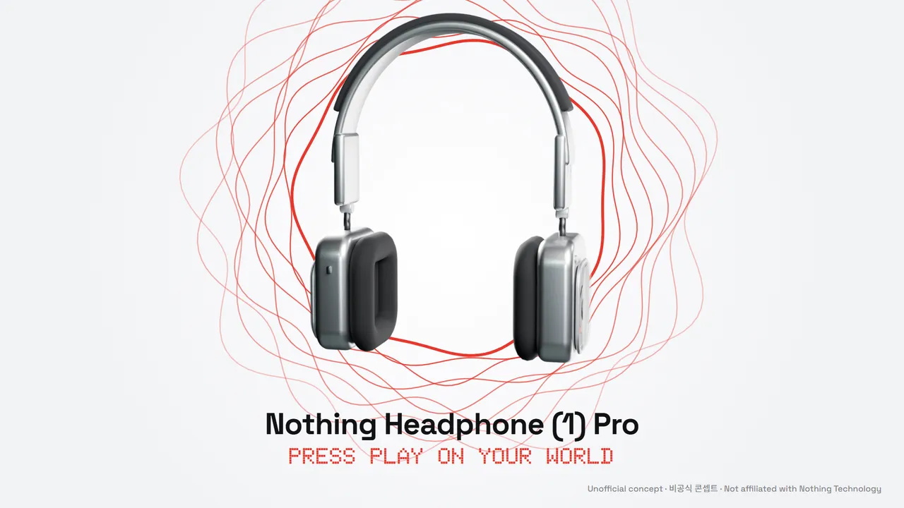
후 · 직접 만든 3DWork 02 · AI 영상 광고
외출 준비 → 향수 분사 → 행사 입장. 같은 인물의 저녁을 32초로 보여 주는 AI 영상 광고예요. 버전마다 받은 피드백을 하나씩 반영해 v5까지 만들었어요.
v5 32초 · 1920×1080 · 소리 있음 — AI 생성 영상, 공식 제품 사진 구간은 직접 만든 3D 병 그림으로 교체
Process evidence · 02
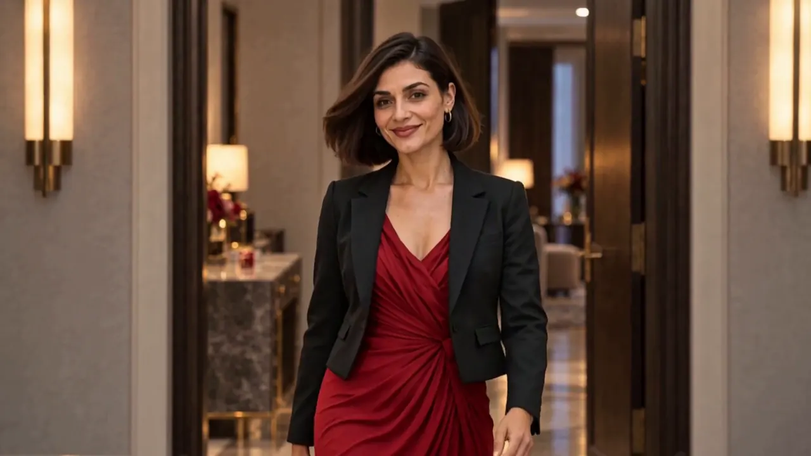
REJECT · v4 재킷·혼자 입장ADOPT · v5 입장→손님 반응사용자 시청 결과: 반복감, 분사 행위가 안 보임, 추상적인 향 연출, 재킷, 주변 반응 부족.
병 버튼을 눌러 분사까지 보이는 샷, 같은 인물·드레스만(재킷 0), 별도 추상 향 컷 0, 입장 → 손님 반응 → 교류로 곧게 이어지는 전개.
v5 제작
1일
10.16 v4 수정 요청 → 같은 날 v5 착수·32초 납품.
본편
768프레임
32초 · 1920×1080 · 24fps · 11컷
v5 새 생성
15,841초
새 테이크 7개 · 562프레임의 실제 생성 시간 합.
비용
LOCAL
로컬 GPU의 MiniMax-H3. 기록상 새 유료 추가 0 — 금액 기록은 없음.
독립 검수
38표본
+ 근접 18프레임 연속 확인. 768프레임 전수 디코드, 1배속 재생 끊김 0, 치명 결함 0.
미검증으로 남긴 것
2개
직접 청취, 실물 노즐 형상. 분사 노즐은 생성된 시안이라고 기록했습니다.
Work 03 · 3D 모션그래픽
롤러를 누르고, 길게 누르고, 돌리고, 패들을 밀 때마다 음악과 화면이 바뀌는 32초 모션그래픽. 재생 버튼으로 시작해 일시정지 버튼으로 끝나요.
32초 본편 · 1920×1080 · 소리 있음
Process evidence · 04
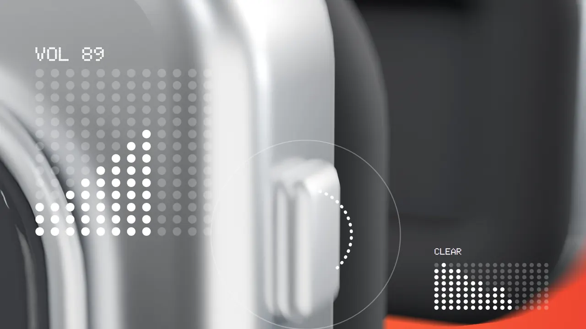
REJECT · 제품 단독 콘티 v3ADOPT · 조작 = 장면 전환① 제품 단독 매크로·회전 콘티 v3 — 거절, 사람·사용 상황 중심으로 재기획. ② 그 뒤 AI 실사 7편 — “느리고, 장소만 바뀌고, 제품과 변화의 인과가 없다”.
공식 매뉴얼의 조작 다섯 가지(누르기·길게·돌리기·패들·Flat 스위치)를 장면 전환의 방아쇠로. 음악 120BPM 마디에 컷을 맞췄다.
본편
768프레임
32초 · 1920×1080 · 24fps (파일 실측)
장면
9장면
모두 실제 조작에서 시작.
이퀄라이저
16대역
화면 이퀄라이저가 실제 믹스의 16대역을 따라간다.
비용
LOCAL
Blender·로컬 음악 모델(ACE-Step)·ffmpeg. 금액 기록 없음.
거쳐 온 거절
2단계
제품 단독 콘티 → 사람 중심 실사 7편 → 제품 조작이 주인공.
검수
768프레임
직접 만든 3D + 2D 합성 + 음악 박자 동기화, 전 프레임 검수.
Work 04 · 3D 모션그래픽 · 가상 브랜드
직접 만든 가상 탄산음료 브랜드 딸깍(TTALKAK) LIME SODA. 3D 캔과 2D 모션그래픽으로 만든 가로 20초 본편, SNS 세로 15초, 세로 포스터 2장, 브랜드 시트까지 한 세트예요.
가로 20초 본편 · 1920×1080 · 30fps · 소리 있음 — 가상 브랜드 · 판매용 아님
Process evidence · 03
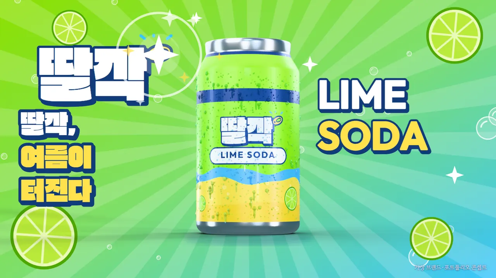
REJECT · 이전 재질ADOPT · 실물 재질 + 조명 60%“3D 텍스처가 색만 입혀 놓은 것 같다, AI 느낌 덜 나게.” 조사해 보니 원인은 금속성 0.5 라벨·코팅, 고른 물방울, 접지감 부족. 다음 날 “캔 빤딱임 없애 줘”.
비금속 잉크·은색 결·크기가 제각각인 물방울로 재질을 새로 짜고, 림·스트립 조명 40%·나머지 60%로 낮춰 캔이 나오는 3D 전부를 다시 렌더.
제작 기간
9일
10.21 브랜드 이름 → 10.29 납품 확정. 사이 10.22~26은 작업 중단 기록.
프레임
1,050장
가로 600(20초) + 세로 450(15초), 모두 30fps.
3D 전체 재렌더
2회
새 실물 재질 1회, 반짝임 줄인 조명 1회 — 캔이 나오는 모든 장면과 포스터.
비용
LOCAL
Blender Cycles·ACE-Step(음악) 모두 로컬. 결제 금지 규칙, 금액 기록 없음.
전수 점검
1,050프레임
튀는 프레임·암전·과노출 0. 음량 가로 −14.3 · 세로 −14.1 LUFS.
사람이 잡은 1장
599→600
재인코딩 때 마지막 1프레임이 잘린 가로 본편을 전수 점검에서 찾아 다시 인코딩.
Work 05 · 앱 광고 · 세로 SNS
직접 만든 알바 월급 계산 앱의 광고예요. 퇴근 버튼 한 번 → 오늘 번 돈 → 이번 달 실수령 → 명세서 대조 → 계산 근거, 앱의 실제 기능 순서가 그대로 장면이 되는 세로 30초예요.
세로 30초 본편 · 1080×1920 · 소리 있음 — 화면 속 금액은 스토어용 데모 데이터
Process evidence · 05
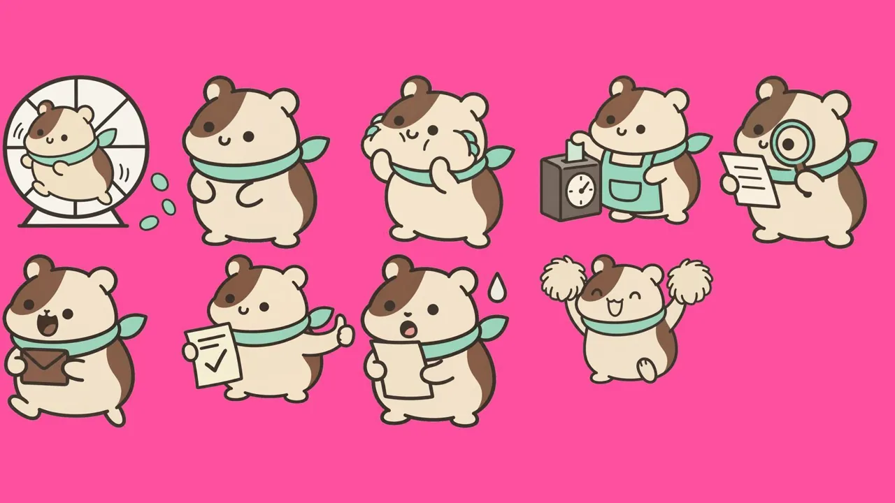
좌우 반전 금지 · 팔레트 5색탈락본 파일 없음 → 기준서 문구로 대신
캐릭터 기준서(좌우 반전 금지·팔레트 5색)에 맞지 않는 그림은 쓰지 않았다. 3D 없이 2D만, 기존 두 광고와 겹치지 않는 세로 광고가 목표.
통과한 그림만 투명하게 오려 한 장씩 코드로 움직이는 컷아웃 애니메이션. 120BPM 박자 격자(15프레임)에 컷과 숫자 움직임을 맞췄다.
제작 기간
1일
10.20 착수 → 같은 날 본편·범퍼·가로 모두 사용자 확정.
본편
900프레임
30초 · 1080×1920 · 30fps (파일 실측)
매체별 컷
4편
세로 30초 · 범퍼 6초 2개 · 가로 15초.
비용
LOCAL
HTML·JS + 헤드리스 Chrome, Python, ffmpeg, ACE-Step. 금액 기록 없음.
박자 격자
15프레임
120BPM 한 박마다 컷과 숫자 움직임을 맞춤.
미검증으로 남긴 것
2개
소리 실제 청취, 실제 폰 재생.